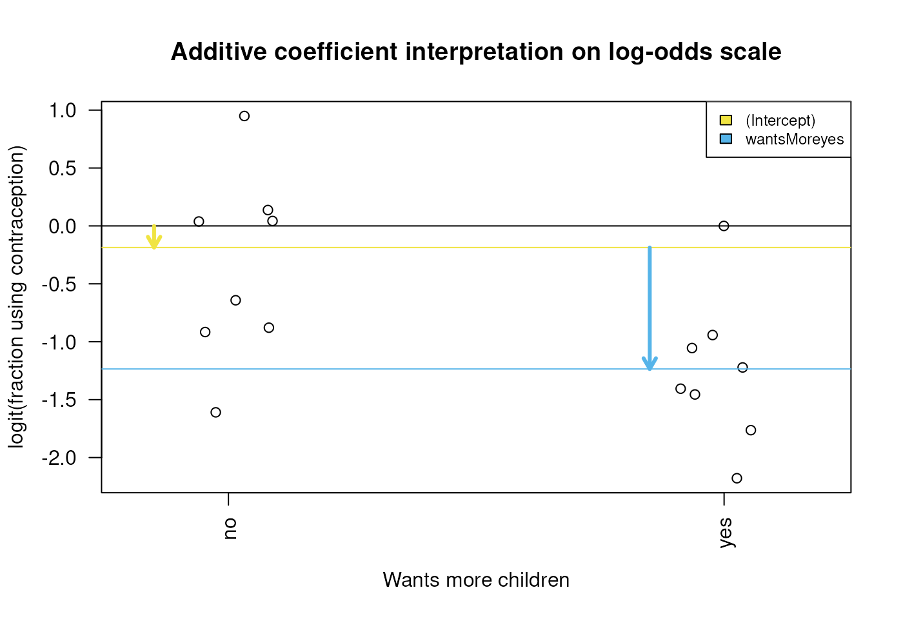

Session 3: Regression coefficients and model matrices
Levi Waldron
session_lecture.RmdLearning objectives and outline
GLM review
Components of GLM
-
Random component specifies the conditional
distribution for the response variable
- doesn’t have to be normal
- can be any distribution in the “exponential” family of distributions
- Systematic component specifies linear function of predictors (linear predictor)
-
Link [denoted by g(.)] specifies the relationship
between the expected value of the random component and the systematic
component
- can be linear or nonlinear
Logistic Regression as GLM
The model: $$ \begin{aligned} Logit(P(x)) &= log \left( \frac{P(x)}{1-P(x)} \right) \notag\\ &= \beta_0 + \beta_1 x_{1i} + \beta_2 x_{2i} + ... + \beta_p x_{pi} \notag \end{aligned} $$
Random component: follows a Binomial distribution (outcome is a binary variable)
Systematic component: linear predictor
Link function: logit (log of the odds that the event occurs)
Interpretation of main effects and interactions in logistic regression
Motivating example: contraceptive use data
From http://data.princeton.edu/wws509/datasets/#cuse
cuse <- read.table("cuse.dat", header=TRUE)
summary(cuse)## age education wantsMore notUsing using
## Length :16 Length :16 Length :16 Min. : 8.00 Min. : 4.00
## N.unique : 4 N.unique : 2 N.unique : 2 1st Qu.: 31.00 1st Qu.: 9.50
## N.blank : 0 N.blank : 0 N.blank : 0 Median : 56.50 Median :29.00
## Min.nchar: 3 Min.nchar: 3 Min.nchar: 2 Mean : 68.75 Mean :31.69
## Max.nchar: 5 Max.nchar: 4 Max.nchar: 3 3rd Qu.: 85.75 3rd Qu.:49.00
## Max. :212.00 Max. :80.00Univariate regression on “wants more children”
##
## Call:
## glm(formula = cbind(using, notUsing) ~ wantsMore, family = binomial("logit"),
## data = cuse)
##
## Coefficients:
## Estimate Std. Error z value Pr(>|z|)
## (Intercept) -0.18636 0.07971 -2.338 0.0194 *
## wantsMoreyes -1.04863 0.11067 -9.475 <2e-16 ***
## ---
## Signif. codes: 0 '***' 0.001 '**' 0.01 '*' 0.05 '.' 0.1 ' ' 1
##
## (Dispersion parameter for binomial family taken to be 1)
##
## Null deviance: 165.772 on 15 degrees of freedom
## Residual deviance: 74.098 on 14 degrees of freedom
## AIC: 149.61
##
## Number of Fisher Scoring iterations: 4Interpretation of “wants more children” table
- Coefficients for (Intercept) and dummy variables
- Coefficients are normally distributed when assumptions are correct
Interpretation of “wants more children” coefficients

Diagram of the estimated coefficients in the GLM. The yellow arrow indicates the Intercept term, which goes from zero to the mean of the reference group (here the ‘wantsMore = no’ samples). The blue arrow indicates the difference in log-odds of the yes group minus the no group, which is negative in this example. The circles show the individual samples, jittered horizontally to avoid overplotting.
Regression on age
- Four age groups
- three dummy variables
age25-29,age30-39,age40-49 - how to interpret them?
- three dummy variables
Regression on age
##
## Call:
## glm(formula = cbind(using, notUsing) ~ age, family = binomial("logit"),
## data = cuse)
##
## Coefficients:
## Estimate Std. Error z value Pr(>|z|)
## (Intercept) -1.5072 0.1303 -11.571 < 2e-16 ***
## age25-29 0.4607 0.1727 2.667 0.00765 **
## age30-39 1.0483 0.1544 6.788 1.14e-11 ***
## age40-49 1.4246 0.1940 7.345 2.06e-13 ***
## ---
## Signif. codes: 0 '***' 0.001 '**' 0.01 '*' 0.05 '.' 0.1 ' ' 1
##
## (Dispersion parameter for binomial family taken to be 1)
##
## Null deviance: 165.772 on 15 degrees of freedom
## Residual deviance: 86.581 on 12 degrees of freedom
## AIC: 166.09
##
## Number of Fisher Scoring iterations: 4Recall model formulae
| symbol | example | meaning |
|---|---|---|
| + | + x | include this variable |
| - | - x | delete this variable |
| : | x : z | include the interaction |
| * | x * z | include these variables and their interactions |
| ^ | (u + v + w)^3 | include these variables and all interactions up to three way |
| 1 | -1 | intercept: delete the intercept |
Regression on age and wantsMore
| Estimate | Std. Error | z value | Pr(>|z|) | |
|---|---|---|---|---|
| (Intercept) | -0.87 | 0.16 | -5.54 | 0.00 |
| age25-29 | 0.37 | 0.18 | 2.10 | 0.04 |
| age30-39 | 0.81 | 0.16 | 5.06 | 0.00 |
| age40-49 | 1.02 | 0.20 | 5.01 | 0.00 |
| wantsMoreyes | -0.82 | 0.12 | -7.04 | 0.00 |
Interaction / Effect Modification
- What if we want to know whether the effect of age is modified by whether the woman wants more children or not?
Interaction is modeled as the product of two covariates:
Interaction / Effect Modification (fit)
| Estimate | Std. Error | z value | Pr(>|z|) | |
|---|---|---|---|---|
| (Intercept) | -1.46 | 0.30 | -4.90 | 0.00 |
| age25-29 | 0.64 | 0.36 | 1.78 | 0.07 |
| age30-39 | 1.54 | 0.32 | 4.84 | 0.00 |
| age40-49 | 1.76 | 0.34 | 5.14 | 0.00 |
| wantsMoreyes | -0.06 | 0.33 | -0.19 | 0.85 |
| age25-29:wantsMoreyes | -0.27 | 0.41 | -0.65 | 0.51 |
| age30-39:wantsMoreyes | -1.09 | 0.37 | -2.92 | 0.00 |
| age40-49:wantsMoreyes | -1.37 | 0.48 | -2.83 | 0.00 |
The Design Matrix
What is the design matrix, and why?
- What? The design matrix is the most generic, flexible way to specify them
- Why? There are multiple possible and reasonable regression models for a given study design.
Matrix notation for the multiple linear regression model
or simply:
- The design matrix is
- the computer will take as a given when solving for by minimizing the sum of squares of residuals , or maximizing likelihood.
Choice of design matrix
- The model formula encodes a default model matrix, e.g.:
group <- factor( c(1, 1, 2, 2) )
model.matrix(~ group)## (Intercept) group2
## 1 1 0
## 2 1 0
## 3 1 1
## 4 1 1
## attr(,"assign")
## [1] 0 1
## attr(,"contrasts")
## attr(,"contrasts")$group
## [1] "contr.treatment"Choice of design matrix (cont’d)
What if we forgot to code group as a factor?
group <- c(1, 1, 2, 2)
model.matrix(~ group)## (Intercept) group
## 1 1 1
## 2 1 1
## 3 1 2
## 4 1 2
## attr(,"assign")
## [1] 0 1More groups, still one variable
group <- factor(c(1,1,2,2,3,3))
model.matrix(~ group)## (Intercept) group2 group3
## 1 1 0 0
## 2 1 0 0
## 3 1 1 0
## 4 1 1 0
## 5 1 0 1
## 6 1 0 1
## attr(,"assign")
## [1] 0 1 1
## attr(,"contrasts")
## attr(,"contrasts")$group
## [1] "contr.treatment"Changing the baseline group
group <- factor(c(1,1,2,2,3,3))
group <- relevel(x=group, ref=3)
model.matrix(~ group)## (Intercept) group1 group2
## 1 1 1 0
## 2 1 1 0
## 3 1 0 1
## 4 1 0 1
## 5 1 0 0
## 6 1 0 0
## attr(,"assign")
## [1] 0 1 1
## attr(,"contrasts")
## attr(,"contrasts")$group
## [1] "contr.treatment"More than one variable
agegroup <- factor(c(1,1,1,1,2,2,2,2))
wantsMore <- factor(c("y","y","n","n","y","y","n","n"))
model.matrix(~ agegroup + wantsMore)## (Intercept) agegroup2 wantsMorey
## 1 1 0 1
## 2 1 0 1
## 3 1 0 0
## 4 1 0 0
## 5 1 1 1
## 6 1 1 1
## 7 1 1 0
## 8 1 1 0
## attr(,"assign")
## [1] 0 1 2
## attr(,"contrasts")
## attr(,"contrasts")$agegroup
## [1] "contr.treatment"
##
## attr(,"contrasts")$wantsMore
## [1] "contr.treatment"With an interaction term
model.matrix(~ agegroup + wantsMore + agegroup:wantsMore)## (Intercept) agegroup2 wantsMorey agegroup2:wantsMorey
## 1 1 0 1 0
## 2 1 0 1 0
## 3 1 0 0 0
## 4 1 0 0 0
## 5 1 1 1 1
## 6 1 1 1 1
## 7 1 1 0 0
## 8 1 1 0 0
## attr(,"assign")
## [1] 0 1 2 3
## attr(,"contrasts")
## attr(,"contrasts")$agegroup
## [1] "contr.treatment"
##
## attr(,"contrasts")$wantsMore
## [1] "contr.treatment"Design matrix to contrast what we want
- Contraceptive use example
- The effect of wanting more children different for 40-49 year-olds
than for <25 year-olds is answered by the term
age40-49:wantsMoreyesin this default model with interaction terms
- The effect of wanting more children different for 40-49 year-olds
than for <25 year-olds is answered by the term
| Estimate | Std. Error | z value | Pr(>|z|) | |
|---|---|---|---|---|
| (Intercept) | -1.46 | 0.30 | -4.90 | 0.00 |
| age25-29 | 0.64 | 0.36 | 1.78 | 0.07 |
| age30-39 | 1.54 | 0.32 | 4.84 | 0.00 |
| age40-49 | 1.76 | 0.34 | 5.14 | 0.00 |
| wantsMoreyes | -0.06 | 0.33 | -0.19 | 0.85 |
| age25-29:wantsMoreyes | -0.27 | 0.41 | -0.65 | 0.51 |
| age30-39:wantsMoreyes | -1.09 | 0.37 | -2.92 | 0.00 |
| age40-49:wantsMoreyes | -1.37 | 0.48 | -2.83 | 0.00 |
Design matrix to contrast what we want (cont’d)
- What if we want to ask this question for 40-49 year-olds vs. 30-39 year-olds?
The desired contrast is:
age40-49:wantsMoreyes - age30-39:wantsMoreyes
There are many ways to construct this design, one is with
library(multcomp)
Design matrix constructed with library(multcomp)
coef(fit)## (Intercept) age25-29 age30-39
## -1.45528723 0.63538835 1.54114852
## age40-49 wantsMoreyes age25-29:wantsMoreyes
## 1.76429207 -0.06399958 -0.26723185
## age30-39:wantsMoreyes age40-49:wantsMoreyes
## -1.09049316 -1.36714805## [,1] [,2] [,3] [,4] [,5] [,6] [,7] [,8]
## [1,] 0 0 0 0 0 0 -1 1##
## Simultaneous Tests for General Linear Hypotheses
##
## Fit: glm(formula = cbind(using, notUsing) ~ age * wantsMore, family = binomial("logit"),
## data = cuse)
##
## Linear Hypotheses:
## Estimate Std. Error z value Pr(>|z|)
## 1 == 0 -0.2767 0.3935 -0.703 0.482
## (Adjusted p values reported -- single-step method)